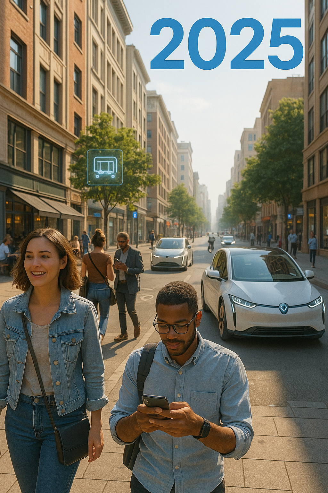
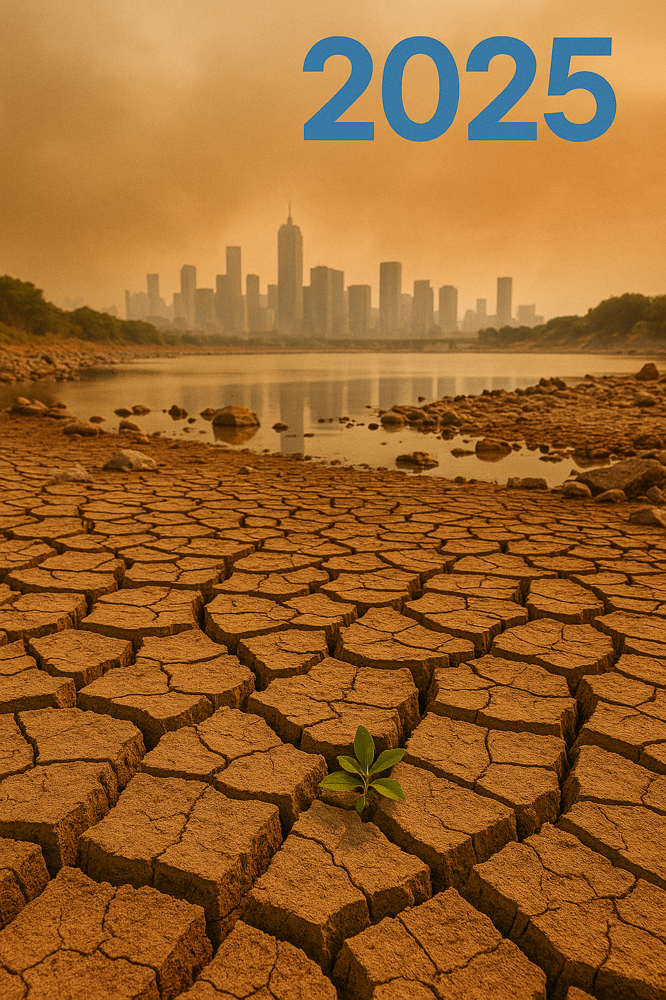
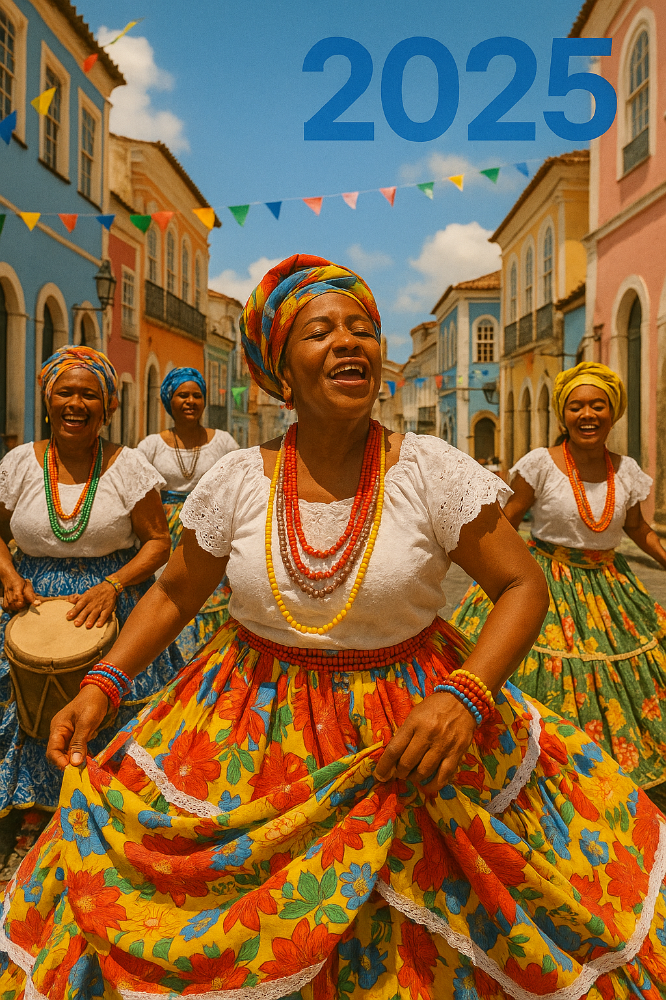
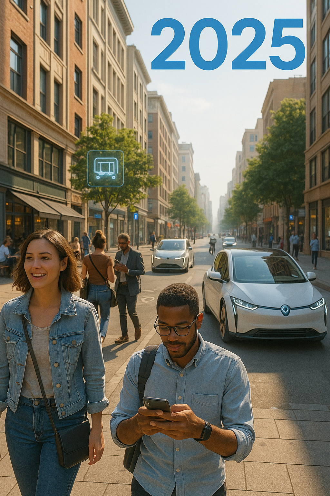
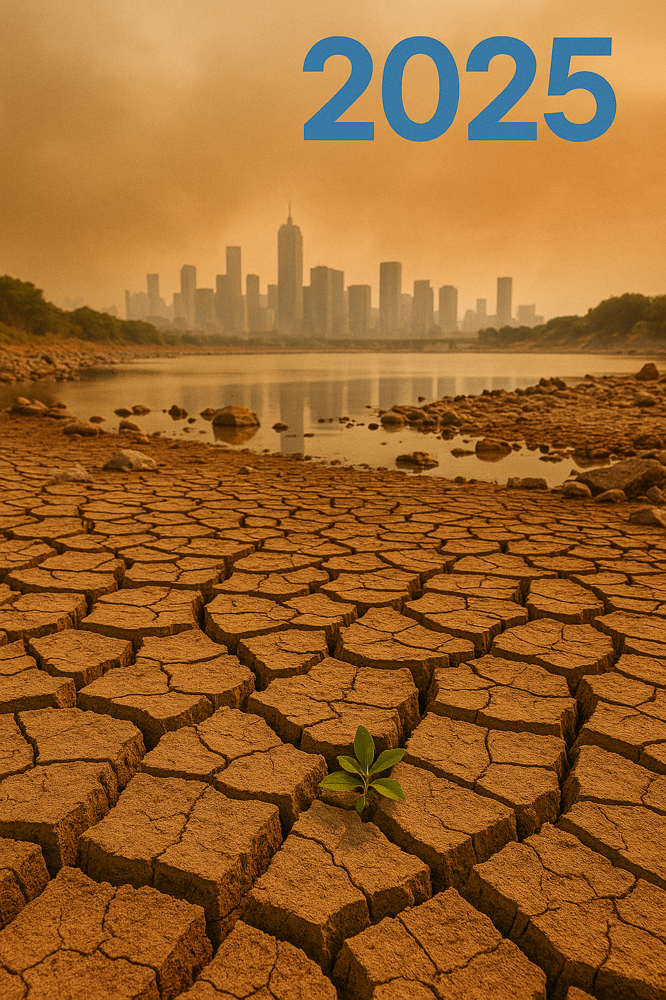
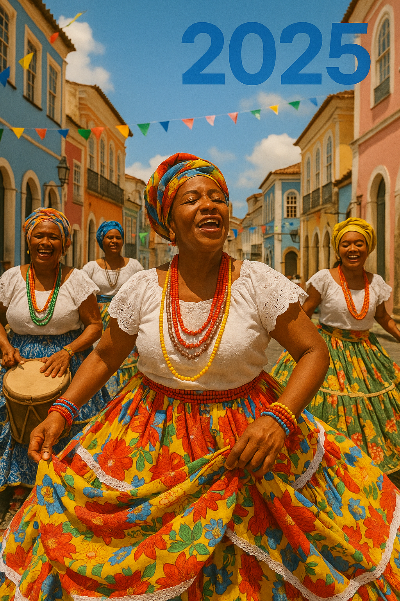

Mensagem para o Futuro
2025.05.21
Deixamos para vocês alguns vislumbres de nossa era:
- Nossa tecnologia ainda está limitada à Terra, com apenas explorações iniciais em Marte.
- Estamos apenas começando a compreender o potencial da computação quântica.
- A inteligência artificial está em sua infância, mas já mostra sinais de grandes mudanças sociais.
- Lutamos contra mudanças climáticas e a perda de biodiversidade em nosso planeta.
- Nossos maiores sonhos incluem cura para todas as doenças, energia limpa ilimitada e exploração espacial.
Imagens da Era Digital
 





Perguntas ao Futuro
- Como vocês superaram a crise climática que começou em nossa era?
- A inteligência artificial se tornou consciente? Como convivem com ela?
- A humanidade encontrou outras civilizações inteligentes no cosmos?
- Conseguiram superar as limitações da biologia humana?
- O que vocês consideram como nosso maior legado para o futuro?